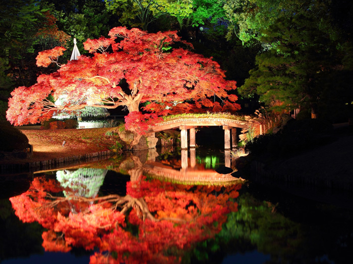

お問い合わせ窓口 電話0120-12-3456
紅葉が見ごろの六義園を散策します。ライトアップされた庭園は、昼とは違う魅力がたくさん。 東京の庭園に詳しい弊社スタッフが、この時期の六義園の見どころを紹介します。
11月中旬までの期間限定企画です。ぜひ、ご参加ください
集合場所はJR巣鴨駅です。六義園入り口での集合も可能です。
JR巣鴨駅改札口を出たところで、当社スタッフがお待ちしております。
〒123-4567
東京都新宿区百人町1-2-3
TEL:03-1234-5678